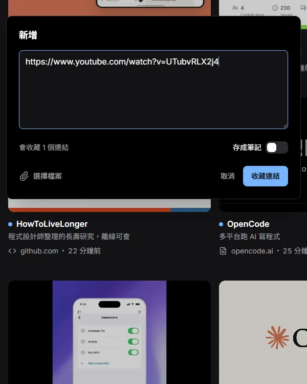
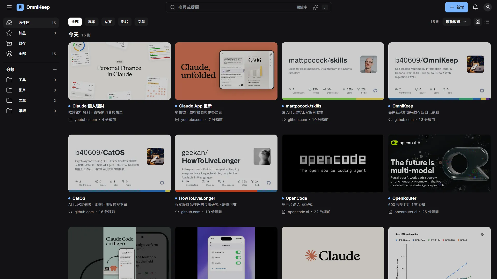
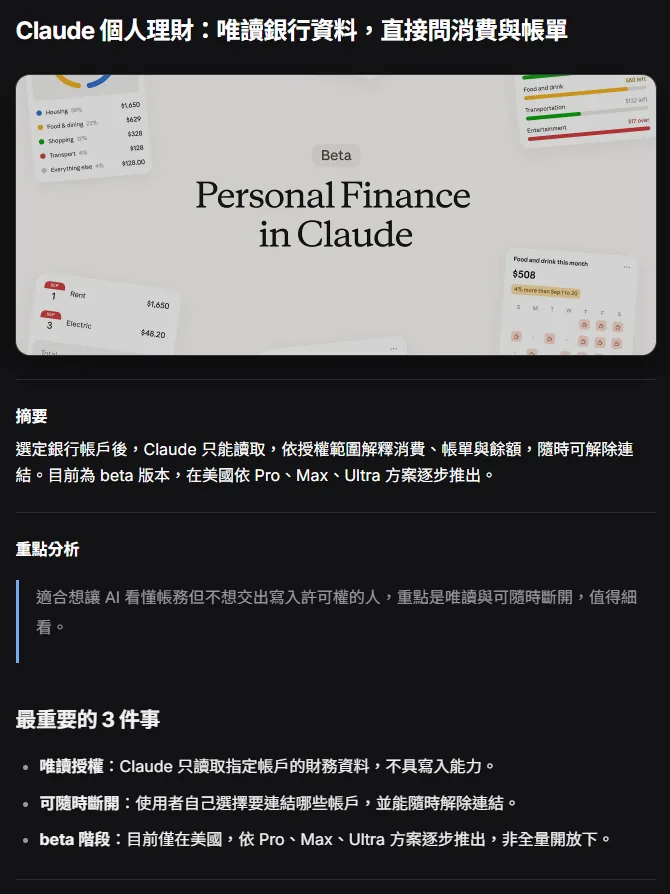
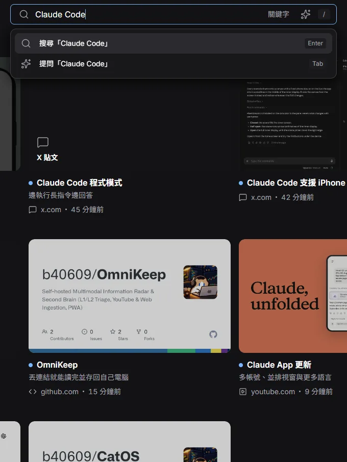
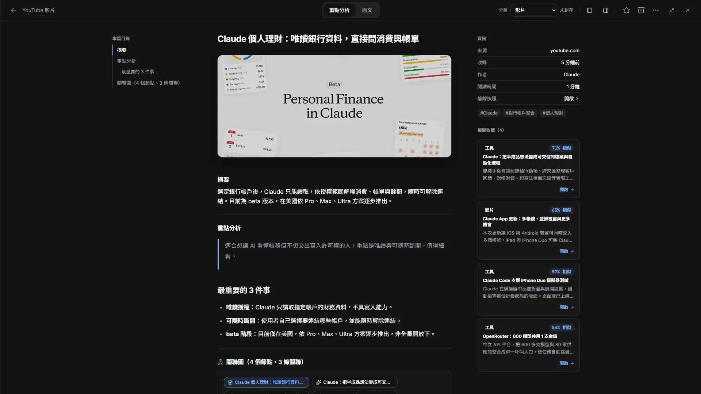
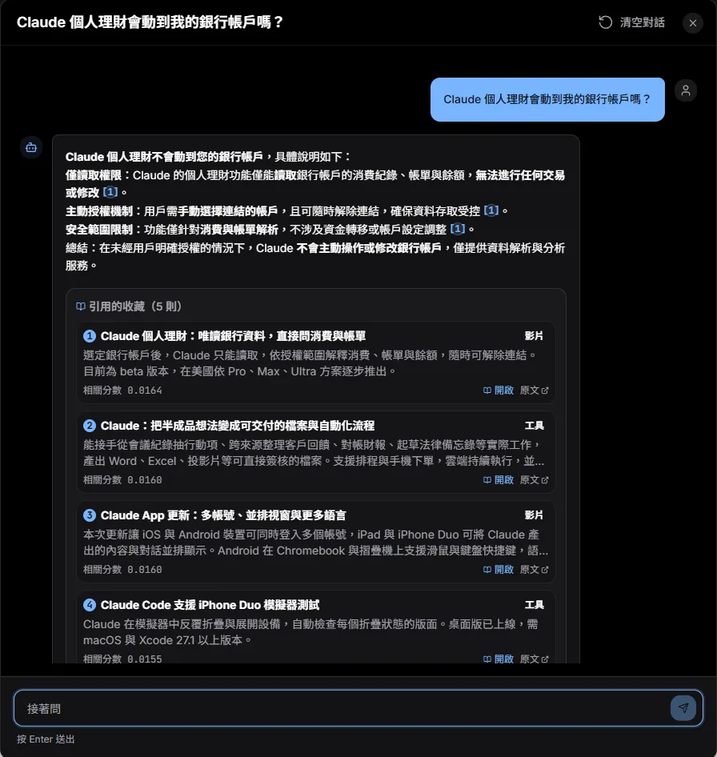
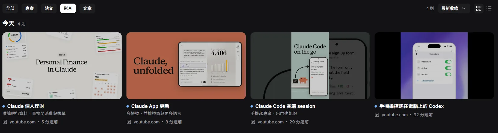
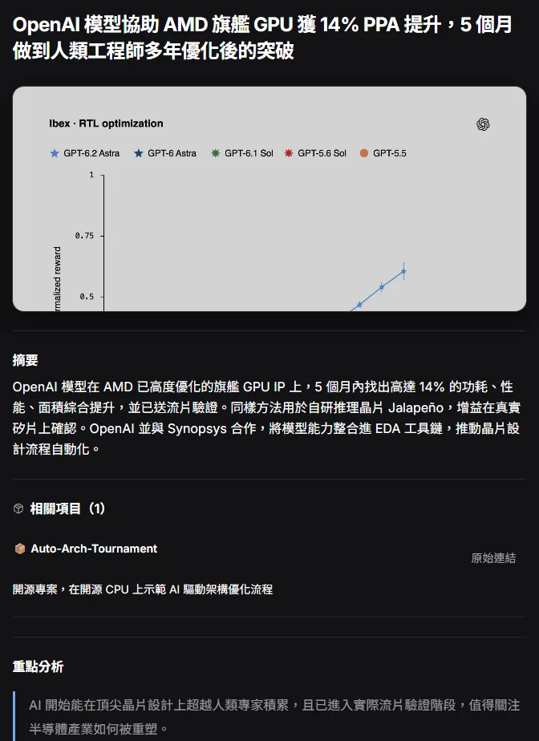
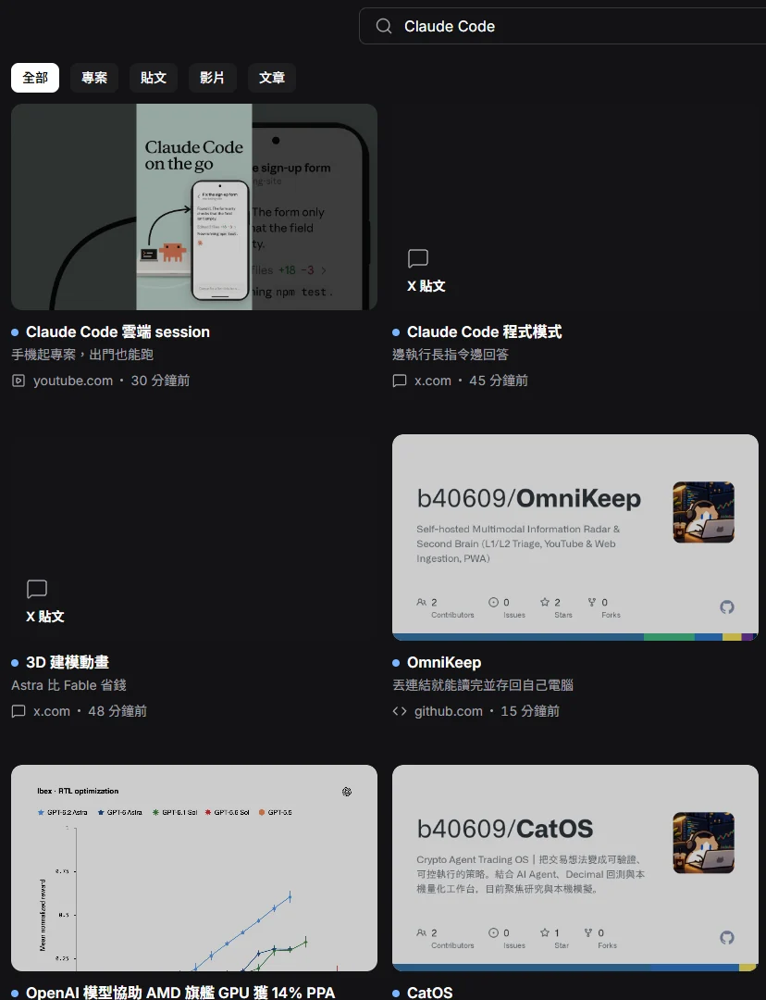
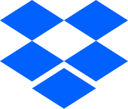

1
丟連結
在 Telegram 把連結傳給自己的機器人；在電腦上，按頂部的「新增」貼上也行。

OmniKeep
把連結傳給自己的機器人，它讀完網頁、影片與社群貼文寫成摘要；之後用搜尋或提問就找得到。
開源，MIT 授權 · Windows、macOS、Linux

1
在 Telegram 把連結傳給自己的機器人；在電腦上，按頂部的「新增」貼上也行。

2
網頁、影片、社群貼文都抓下內容，交給你接上的 AI 寫出摘要與重點。

3
頂部一個搜尋框：按 Enter 搜尋關鍵字，按 Tab 改成對收藏提問。

卡片上是一句說重點的標題和一兩句白話。打開那則收藏，看完整的重點分析、關聯圖與 Markdown 原文。

OmniKeep 先找出相關的收藏，再交給 AI 回答；每一句後面標著引用的收藏編號，點開就是那一則。

探索、每日回顧、專案監看這些實驗功能還在調整，新安裝預設關閉，要用再到「設定 › 實驗功能」開啟。
YouTube 讀字幕或本機轉錄，短影音用畫面文字加語音；長文清掉廣告，另存一份 HTML 快照。

Telegram 機器人是主要入口，也能用 LINE、iOS 捷徑，或讓 agent 透過 MCP 寫進來。
社群貼文一樣抓下內容，交給 AI 寫摘要。

最相關的排前面，上方再切專案、貼文、影片或文章。

收藏存在你電腦上的一個 SQLite 資料庫，不放在別人的雲端；每天自動備份一次。
WAL 模式；全文索引用 trigram 分詞的 FTS5，語意搜尋用 sqlite-vec。

本機多份輪替，或用 rclone 同步到 Google Drive、Dropbox、S3，也能自動提交到私有 Git 儲存庫。
服務預設只聽 127.0.0.1；要從手機連回來，走 Tailscale 這類私有網路。
最省事的裝法：對 Claude Code、Codex 或 Antigravity 說一句話。
幫我安裝 OmniKeep：https://github.com/b40609/OmniKeep
agent 會裝好，再帶你接上 AI、接上 Telegram、丟第一個連結。金鑰與機器人權杖在 OmniKeep 的設定頁自己貼，不經過聊天。
也可以自己執行安裝腳本。Windows（Windows PowerShell 5.1 或 PowerShell 7）
& ([scriptblock]::Create((irm https://raw.githubusercontent.com/b40609/OmniKeep/main/scripts/install.ps1).TrimStart([char]0xFEFF)))
macOS、Linux
curl -fsSL https://raw.githubusercontent.com/b40609/OmniKeep/main/scripts/install.sh | bash
需要 git、Python 3.12+、Node.js 20.19+ 或 22.12+。裝好後在這台電腦打開 127.0.0.1:5000，直接進主畫面；還沒接上 AI 也能先收藏。